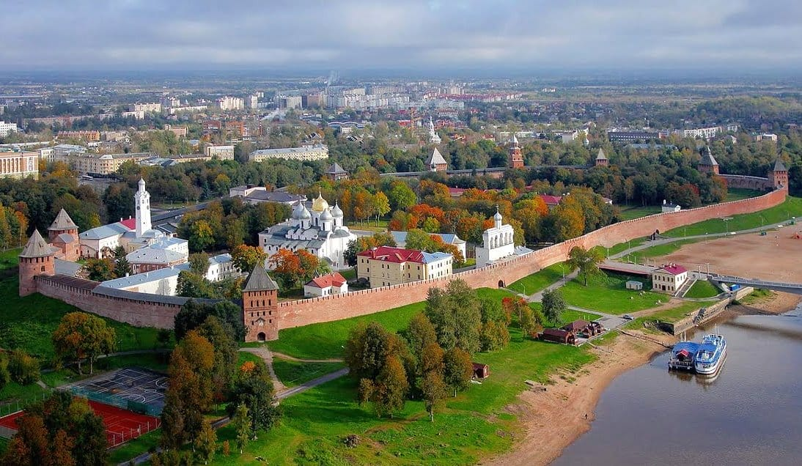

po4ta@gmail.com
+1 (234) 567 8900
Подпишитесь на нас в соц.сетях чтобы узнавать о новых интересных рецептах!
ВОЛОГОДСКАЯ КУХНЯ
Вологодская кухня – это уникальное сочетание традиций русской и северной гастрономии. И она вобрала в себя множество ярких вкусов и ароматов. Исторически сложившаяся кухня Вологодской области имеет свои особенности. И свои отличительные черты, которые делают её узнаваемой и привлекательной. 
Город Вологда
Вологда – исторический город, расположенный на реке Вологда в России. И известна своими деревянными зодчеством и архитектурными памятниками. А ещё в городе находится кремль, который является его символом, и другие музеи. Кстати, город богат и культурной историей. И в том числе традиционным ремесленничеством и народным искусством.
При этом, Вологда является и одним из крупных образовательных центров в России. И здесь расположены несколько университетов и других специализированных учебных заведений. Несомненно, город является ещё одной из гастрономических столиц нашей страны. А местная Вологодская кухня имеет глубокие исторические корни.
Вологодская кухня является одной из наиболее богатых и разнообразных в России. А история её развития насчитывает несколько столетий. И тесно связана с традициями и обычаями вологодского края.
Среди основных ингредиентов здесь можно выделить мясо, рыбу, молочные продукты. А ещё грибы и ягоды, которые были доступны в изобилии на этих просторах. Пожалуй, особое место в местной кухне занимают молочные продукты, такие как творог, сметана, сыры, кефир. Именно благодаря особенностям местной почвы и климата, эти продукты обладают особым вкусом и ароматом.
Одним из самых известных блюд в вологодской кулинарии является «государственный суп». А готовят его из мяса, картофеля и овощей. И он славится своим насыщенным вкусом и простотой приготовления.
Также известна многочисленная локальная национальная выпечка. К примеру ватрушки, кулебяка, пряники, пирожки и пироги. А готовятся эти блюда с различными начинками. Такими как ягоды, фрукты, грибы, мясо, сыр и капуста. Кстати, многие из них имеют особые региональные названия. И под ними и стали известными за пределами Вологодской области.
Приготовьте наваристые щи с крошево из следующих ингредиентов: 400 г свинины на кости, 250 г крошева, 3 картофелины, 1 луковицу, 1 морковь, 1 лавровый лист, соль и черный молотый перец по вкусу. Промойте свинину и выложите в кастрюлю с 2.5 литрами воды. Доведите до кипения, снимите пену, уменьшите огонь и варите 2 часа, накрыв крышкой. Пока бульон варится, промойте крошево, очистите и нарежьте картофель, лук и морковь. В бульон добавьте натертую морковь и нарезанный кубиками картофель и лук. Через 30-40 минут, когда овощи будут готовы, выньте их из бульона. Размять картофель толкушкой или вилкой, мясо снять с кости и нарезать мелкими кусочками. Выложите измельченное мясо и пюре из картофеля обратно в бульон, добавьте лавровый лист, соль и молотый перец по вкусу и варите еще 5-10 минут до готовности. Подавайте щи горячими со свежей зеленью и сметаной.
Приготовьте десерт “Дежень” из следующих ингредиентов: толокно, молоко или вода, творог, простокваша, сметана, свежие ягоды, сахар и соль. Толокно протрите с молоком или водой до получения мелкой крупки, добавьте соль и сахар по вкусу. Разведите творог простоквашей со сметаной и разложите по чашкам. Полейте каждую порцию творожной смесью, сверху добавьте свежие ягоды. Захватывайте ложкой сразу сухую кашу и творожную смесь и наслаждайтесь вкусом этого традиционного русского блюда.
Приготовьте блюдо из указанных ингредиентов. Говядину нарежьте небольшими кусочками и обжарьте на растительном масле. Лук, чеснок и корень сельдерея нарежьте кубиками и обжарьте в казане. Добавьте нарезанную морковь, репу и влейте горячую воду. Тушите овощи до мягкости, затем добавьте сметану, зелень и специи. Посолите и поперчите по вкусу.Приготовьте тесто: смешайте муку, соль, сахар и дрожжи, добавьте теплую воду и замесите тесто. Оставьте его в теплом месте на 1-1,5 часа, чтобы оно поднялось. Затем разделите тесто на порции, заверните в него готовую начинку из овощей и мяса и выпекайте в духовке при температуре 180-200 градусов до готовности теста. Подавайте блюдо горячим, посыпав свежей зеленью.
Приготовьте блюдо из фарша . Для этого вам понадобится: говядина, сельдь, картофель, лук, яйцо, бульон, изюм, маргарин, мука, сахар, уксус, соль.
Вымойте филе сельди и пропустите его через мясорубку вместе с говядиной, картофелем и луком. Добавьте яйцо и слепите биточки. Поджарьте их на сковороде до золотистой корочки.
Пережарьте муку на маргарине, добавьте сахар и соль, затем постепенно добавляйте уксус и бульон. Полученный соус процедите, добавьте изюм и доведите до кипения.
Подавайте биточки горячими, полив их соусом с изюмом.
Подпишитесь на нас в соц.сетях чтобы узнавать о новых интересных рецептах!
created with
Best Free Website Builder .